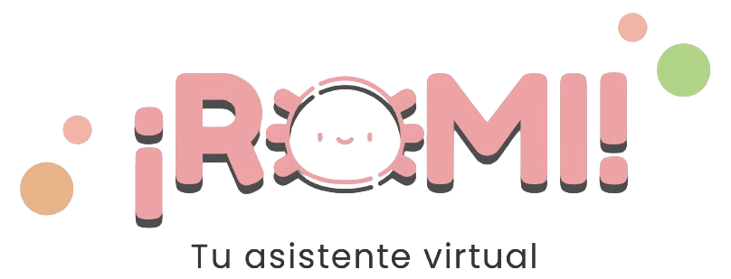

Una conversación.
Un poco más
de claridad.
Pregúntale, cuéntale cómo te sientes o comparte tus dudas. ROMI te acompaña con orientación en salud, en palabras que entiendes.
Te escucha. Te orienta. Te acompaña.
Quiero conocer ROMITU COMPAÑERA DE BIENESTAR
Alguien que te escucha. Hábitos que suman.
Tu información de salud, en un solo lugar.
Nivel de bienestar
Estoy aquí para escucharte.
Habla con ROMI ↗MENOS COMPLICACIONES. MÁS TÚ.
Para eso está ROMI.
UN MISMO LUGAR. MUCHO MÁS DE TI.
Pregúntale, cuéntale cómo te sientes o comparte tus dudas. ROMI te acompaña con orientación en salud, en palabras que entiendes.
Te escucha. Te orienta. Te acompaña.Reúne tu actividad, descanso, hidratación y frecuencia cardiaca. Descubre tus tendencias y dale sentido a tus hábitos.
Una mirada más completa a tu bienestar.Organiza tus antecedentes y tu información de salud. Consulta tu expediente y prepara una ficha de emergencia para cuando la necesites.
Tu información, reunida y fácil de consultar.HOY
ROMI orienta · no reemplaza al médico
TU BIENESTAR
Cada día es diferente.
Vamos a conocer el tuyo.
TU INFORMACIÓN
Información importante,
cuando más la necesitas.
Todo en un mismo lugar.
Pantallas ilustrativas · Datos de ejemplo
EL BIENESTAR ESTÁ EN LO COTIDIANO
No todos los días son iguales. ROMI te ayuda a ver el tuyo.
Registra el agua que tomas y sigue tu meta diaria.
Consulta tus horas de sueño y observa cómo cambian.
Sigue tu actividad y celebra el camino que vas haciendo.
Sincronización con tu permiso y según los datos disponibles en tu dispositivo.
TECNOLOGÍA CON UN LADO MÁS HUMANO
No tienes que tener todas las respuestas. Estoy aquí para ayudarte a entender tu información y acompañarte a construir tus hábitos.
ROMI es un asistente con inteligencia artificial. Ofrece orientación y educación en salud; no hace diagnósticos ni sustituye a tu médico.
Conoce un poco másPOR SI TE LO ESTABAS PREGUNTANDO
ROMI es una aplicación de acompañamiento y educación en salud. Reúne un asistente con inteligencia artificial, el seguimiento de tus hábitos y un expediente digital que puedes construir y consultar desde tu teléfono.
No. ROMI ofrece información educativa y orientación. No realiza diagnósticos ni prescribe tratamientos. Las decisiones sobre tu salud deben tomarse con un profesional; el chat no es un servicio de urgencias.
Puedes conversar con ROMI, construir tu expediente y registrar tu hidratación sin un reloj. Las métricas sincronizadas dependen de los datos que tengas en Apple Salud o Health Connect y de los permisos que concedas.
El plan gratuito incluye tu expediente clínico y de emergencia, sincronización con Salud y hasta cinco mensajes al día. Premium amplía la conversación e incluye memoria entre conversaciones y tendencias semanales. Las opciones de suscripción se consultan dentro de la app.
Escríbenos a contacto@romiai.com.mx para consultar la disponibilidad de ROMI y resolver tus dudas.
UNA CONVERSACIÓN PUEDE SER EL COMIENZO
Descubre una forma más cercana de cuidar de ti.
Quiero conocer ROMI contacto@romiai.com.mx